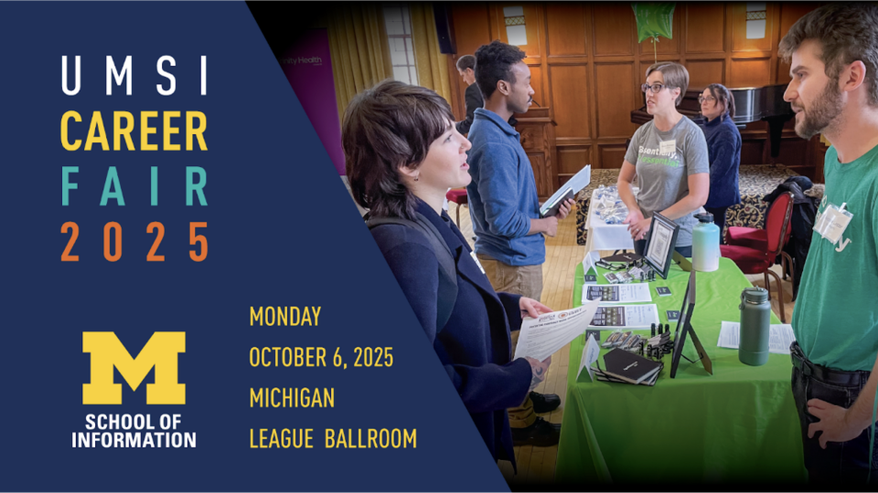
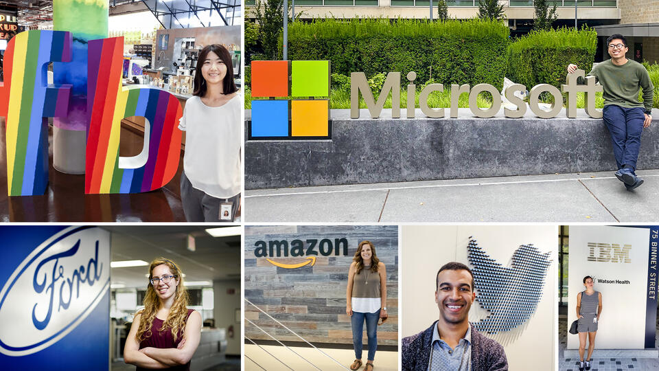

Why Networking Matters
- Learn the real day-to-day work of industries and roles
- Access hidden opportunities such as informational interviews and referrals
- Build long-term professional and career support systems
Ways to Build Connections
Step 1: Find Alumni
CDO Resources
- UMSI LinkedIn Group
- UMSI Alumni Tool
- CareerLink (Employer Contacts & Events)
- UCAN (University Career Alumni Network)
- Alumni Career Connections (via CareerLink)
- Networking or Recruiting Events (via CareerLink)

Your Network: UMSI & Beyond
- Friends and peers (your personal network)
- Faculty, supervisors, and mentors (your professional network)
- LinkedIn search beyond your immediate connections

How to Network Effectively
(1) Goal: Get a Response!
Don't get discouraged by a low response rate. On average, cold outreach receives a response rate of about 20%. Each person who responds is an important and valuable addition to your professional network.
Primary Goal: Get a response.
Common ways to connect include:
- Phone calls
- Zoom or video meetings
- In-person meetings
- Email communication
(2) Writing Your Email to Get a Response
- Write a descriptive and engaging subject line
- Start with context that establishes a connection
- Clearly state what you're looking for & why you're reaching out
- Be specific-what is your "ask?"
- Be flattering-why are you reaching out to them in particular?
- Be concise-respect their time and keep it short
- Make it easy to say yes-define the timeline
- End with a sincere thank you
(3) Writing Your LinkedIn Message to Get a Response
- Be extra concise — LinkedIn messages are limited to 300 characters
- Start with context that explains how or why you found them
- Clearly state what you're looking for & why you're reaching out
- Be specific-what is your "ask?"
- Be flattering-why are you reaching out to them in particular?
- Make it easy to say yes-define the timeline
- End with a polite thank you
Pro Tip: If you are part of the UMSI LinkedIn Group, you can message other members without the 300-character limit.
Campus & Career Office Resources
- UCAN Site Login
- International Alumni Outcomes Spreadsheet
- UMSI Employment Reports & Internship Reports
- Sponsorship resources: Interstride MyVisaJobs